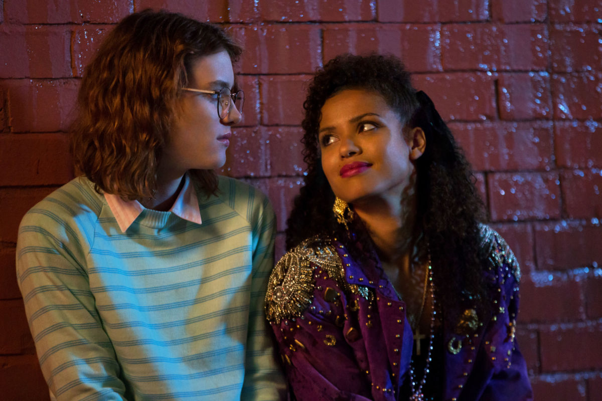
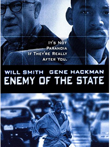
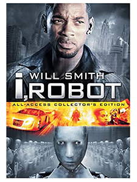
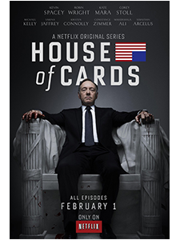

« San Junipero » de Black Mirror
La série Black Mirror, diffusée sur Netflix et mondialement connue. Cette série est connue à cause de son thème qui sont les nouvelles technologies et dénonce l’utilisation de ces technologies par notre société. Dans un épisode, la série dénonce subtilement le stockage de données.
Black Mirror, célèbre série américaine, écrite par Charlie Brooker et diffusée sur la célèbre plateforme de streaming américaine, Netflix. Le thème de cette série sont les nouvelles technologies et leurs impacts sur la société.
Cette série est énormément connue et appréciée car elle se rapproche d’un univers où la technologie est omniprésente dans la vie des gens et qui, au final, se rapproche de notre univers actuel. Maintenant que vous connaissez l’univers de Black Mirror, concentrons-nous sur l’épisode 4 de la saison 3.
Voici la bande-annonce de la saison 3 de Black Mirror, où l'on peut retrouver l'épisode de San Junipero.
Bande-annonce de la saison 3 de Black Mirror
L’épisode 4 de la saison 3 de Black Mirror, réalisé par Owen Harris et toujours écrit par Charlie Brooker se nomme «San Junipero». Dans cet épisode, nous sommes en 1987, dans une ville en bord de mer nommée San Junipero. L’épisode commence par la présentation de Yorkie, une jeune femme timide qui arrive dans la ville.
Elle se dirige donc dans un bar et rencontre une autre jeune femme prénommée Kelly. Elles passent la soirée ensemble et se quittent à minuit. Le vendredi suivant, les deux femmes se retrouvent au même endroit et finissent la soirée chez Kelly en faisant l’amour, et une fois encore, elles se quittent à minuit.
Yorkie et Kelly
On apprendra plus tard dans l’épisode que ces deux jeunes femmes sont en réalité dans un univers complètement fictif voire virtuel. Dans leur univers « réel », on retrouve une Kelly très âgée vivant dans une maison de repos au Nevada et une Yorkie, très âgée également mais avec un corps entièrement paralysé et vivant dans une chambre d’hôpital en Californie.
On apprend que San Junipero est un système de réalité virtuelle pour personnes âgées, ce système leur permet de choisir d’y rester ou pas une fois décédées. Pour rentrer dans cet univers fictif, on attache au niveau de la tempe de la personne, une puce qui permet de transférer l’esprit dans l’univers virtuel de San Junipero.

Yorkie âgée avec la puce
Pour résumer, on peut dire que San Junipero est en quelque sorte une « seconde vie » après la mort dans un monde virtuel. Yorkie a donc décidé de vivre une nouvelle vie dans l’univers de San Junipero et peu de temps après, son amie Kelly la rejoindra.
Les deux amies sont donc plongées indéfiniment dans ce monde virtuel. Juste avant le générique de fin, on peut voir d’immenses datacenters où sont stockés «les esprits» d’autres personnes pour qu’ils puissent vivre dans l’univers de San Junipero.

Black Mirror, datacenters
Films qui ont la même thématique :
-  Affiche Enemy of the State (1998)
-  Affiche I Robot (2004)
-  Affiche House of Cards (2013-2018)